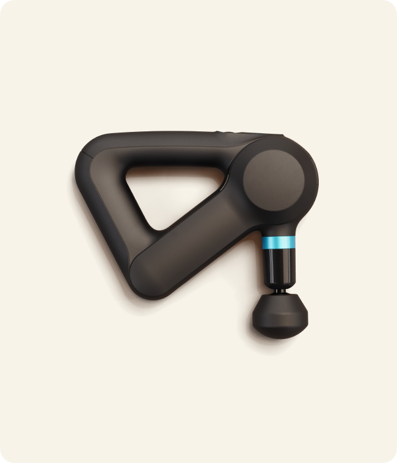
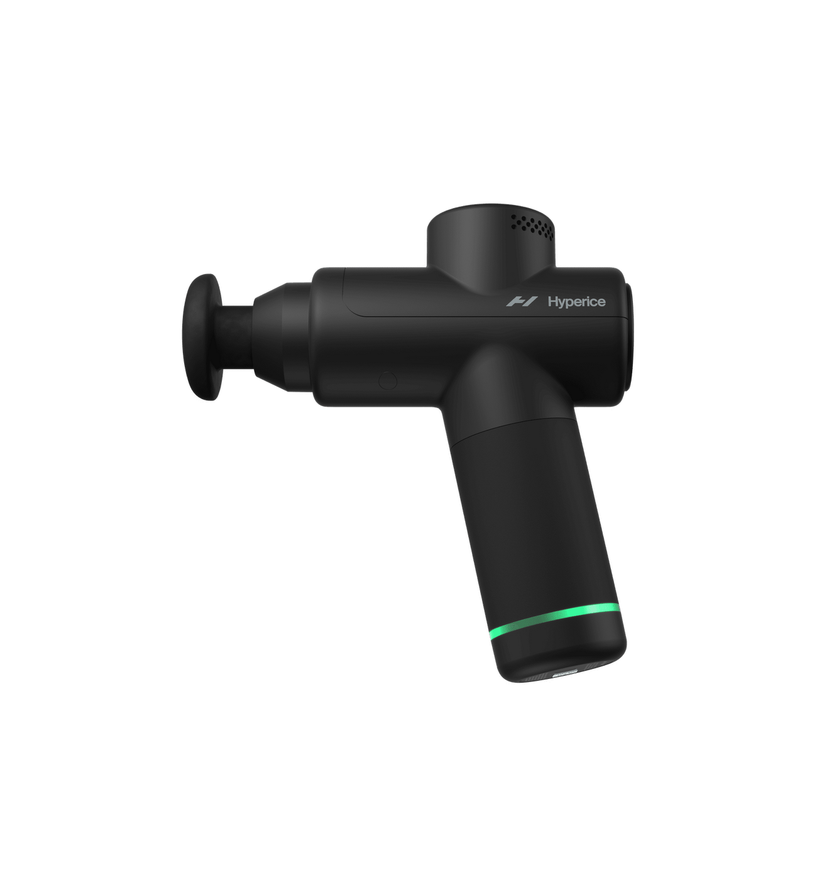
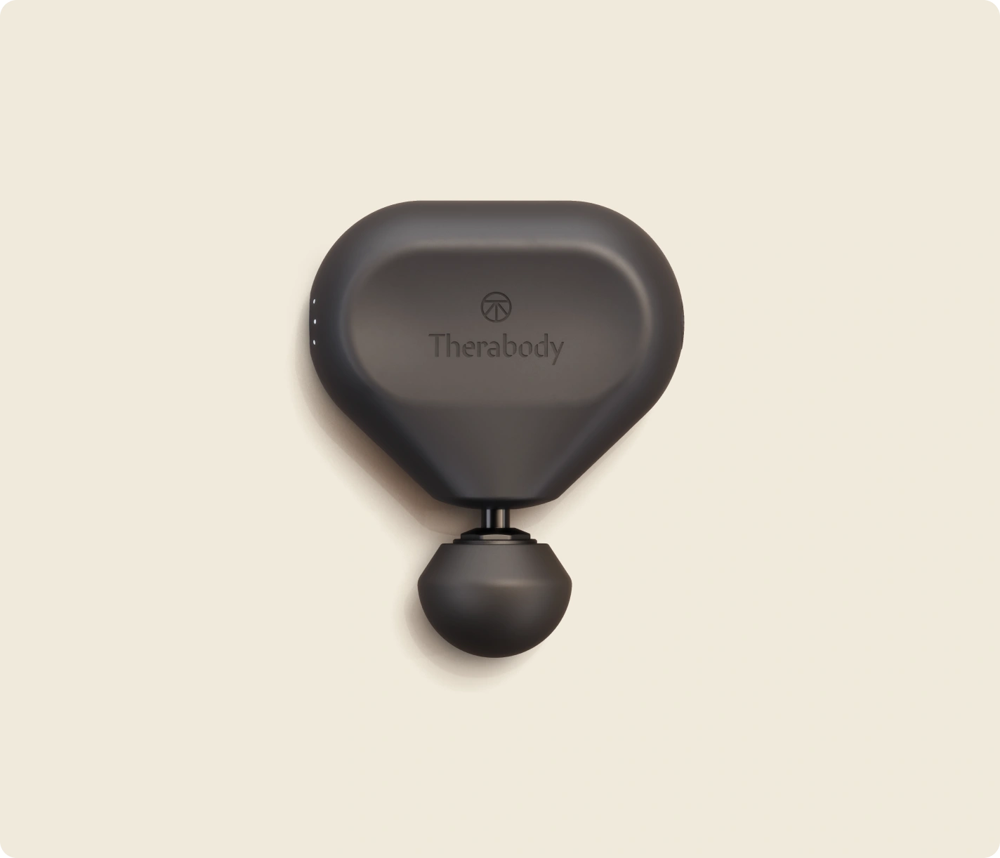
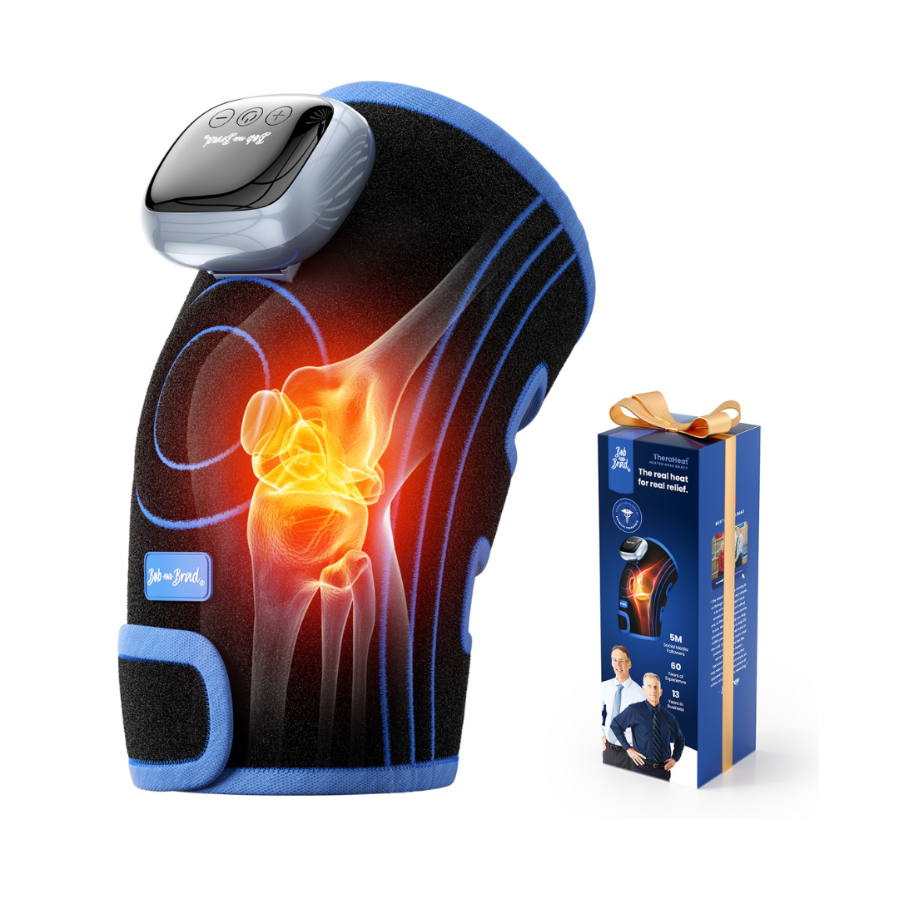

Disclosure: LumaGrid Reviews earns a commission from Amazon and other affiliate links — at no extra cost to you.
The recovery tool market has exploded — and the quality gap between a $65 budget percussion gun and a $299 pro-grade device is smaller than ever. Percussive therapy increases blood flow, breaks up lactic acid buildup, and measurably reduces delayed onset muscle soreness (DOMS) when used consistently before and after training. Whether you're a competitive athlete managing daily training load, a gym-goer dealing with weekend soreness, or someone with chronic desk-job tension in your neck and shoulders — the right recovery tool makes a real, felt difference. We tested four devices across the full price range to tell you exactly which ones earn their keep.
Theragun Elite
Best Overall · $299 · 16mm amplitude, OLED display, 5 speeds
Hypervolt Go 2
Best Lightweight · $179 · Under 1.5 lbs, whisper-quiet, 3 speeds
Theragun Mini 2.0
Best Travel Size · $179 · Pocket-sized Theragun power, USB-C
Bob & Brad D6 Pro
Best Budget · $65 · 23,500+ reviews, 6 speeds, 6 attachments

The Theragun Elite is what serious athletes and physical therapists use, and using it once makes clear why. The proprietary QuietForce Technology keeps noise under 65dB — about the level of a normal conversation — while the motor delivers 16mm of amplitude, the deepest percussive reach of any consumer gun we tested. That extra depth is the difference between surface-level vibration and genuine deep-tissue muscle treatment. The OLED display shows speed and force feedback in real time, and the ergonomic multi-grip design with its triangular handle lets you reach your own upper back and shoulders without assistance. Includes 5 attachments and connects to the Theragun app for guided routines.

The Hypervolt Go 2 is the standout pick for anyone who wants a premium recovery tool that fits in a gym bag without adding bulk. At 1.5 lbs — nearly half the weight of the Theragun Elite — it disappears in your bag but still delivers Hyperice's excellent build quality and whisper-quiet operation. Three speed settings cover the full range from pre-workout activation to post-workout flush, and the PressureSync technology uses an LED indicator to show when you're applying optimal pressure. Battery life is 3 hours, and the USB-C charging means you can top it off from a laptop or power bank on the road.

The Theragun Mini 2.0 is what happens when Theragun compresses its full-size performance into a device that fits in the palm of your hand. The second generation added Bluetooth connectivity and Theragun app integration — a major upgrade from the original Mini — plus three speed settings and a 12mm amplitude that outperforms most mid-range full-size guns. The handle is a perfect cylinder that fits in a jacket pocket, a carry-on bag, or a desk drawer for mid-day tension relief. If you travel frequently and want Theragun-quality recovery without checking a bag, the Mini 2.0 is the obvious choice.

Bob & Brad built their reputation as physical therapist YouTube educators, and the D6 Pro reflects that clinical thinking at a $65 price point. Six speed settings (1800–3200 PPM) and six interchangeable head attachments — including a bullet head for trigger points, a fork for the spine, and a flat head for large muscles — give you legitimate customization that rivals tools costing three times as much. The 10mm amplitude is sufficient for everyday soreness and gym recovery. With over 23,500 Amazon reviews averaging 4.4 stars, the D6 Pro has earned its reputation as the best value in recovery tools.